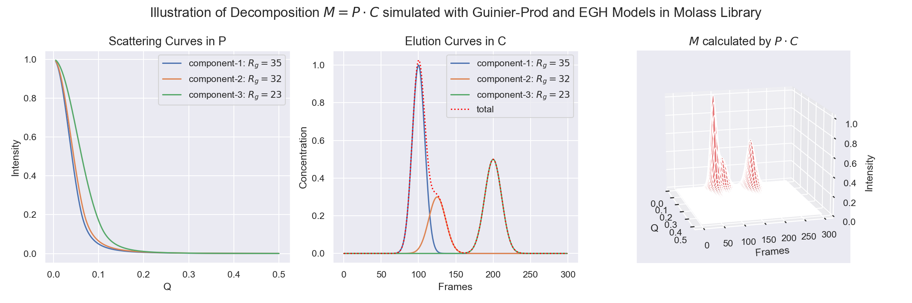

3. Low Rank Factorization#
Among the above mentioned steps, Low Rank Factorization[1] using elution curve models is the most distinctive feature of Molass Library. It is directly related to the decomposition of species contained in the sample, which is first attained physically by the Size Exclusion Chromatograpy, followed by logical estimation and optimization of the software. When the chromatographic peaks are sufficiently separated, the decomposition is relatively simple. Otherwise, i.e., when the peaks overlap widely, it becomes challenging due to underdeterminedness[2] from noise, the handling of which is beyond the scope of this paper and possibly might be studied using the future versions of this library.
Here, we decribe the essense of easier part to give a basic idea of what it is all about. For discussion, it is convenient to use matrices. Ideally, then, the decomposition should be expressed as follows:
where the symbols are
\(M\) : matrix of measured data,
\(P\) : matrix made of columns of component scattering curves,
\(C\) : matrix made of rows of component elution curves.
See the following figure to get intuition of this decomposition.

Using the above relation, the solution can be calculated, in the sense of footnote[3], as follows:
where
Note that in formula \((1)\) and \((2)\), \(P\) and \(C\) are equally eligible mathematically, but physically not. In fact, we get \(P\) from \(M\) and \(C\), because \(M\) is given and it is easier to estimate \(C\) rather than \(P\). The reason for this is as follows.
For elution curves in \(C\), the SEC principle [SYKB09] applies, where the component particles elute in the descending order of particle size, namely the larger comes earlier, resulting in curves with (hopefully) distant peaks, each of which is relatively easy to model as mentioned later.
For scattering curves in \(P\) on the other hand, to the best of our knowledge, we only have classical models for extreme regions, namely, Guinier Approximation [Gui39] for small angle regions and Porod’s law [Por51] for larger angle regions, and none for intermediate regions. From our experience, models just smoothly linking those extreme regions, as the one used in the above figure [Ham10], do not seem applicable at least to real protein samples.